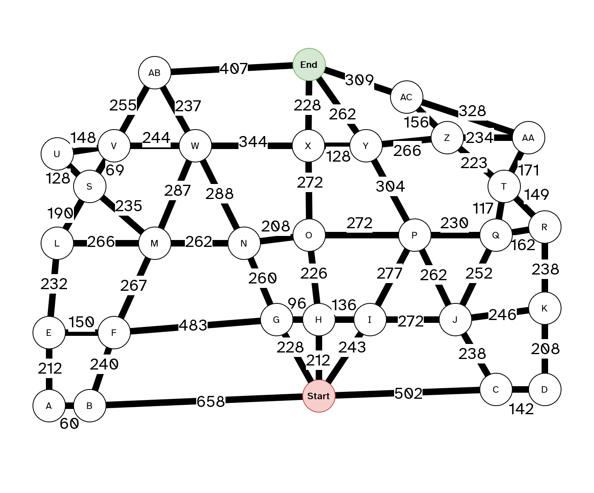
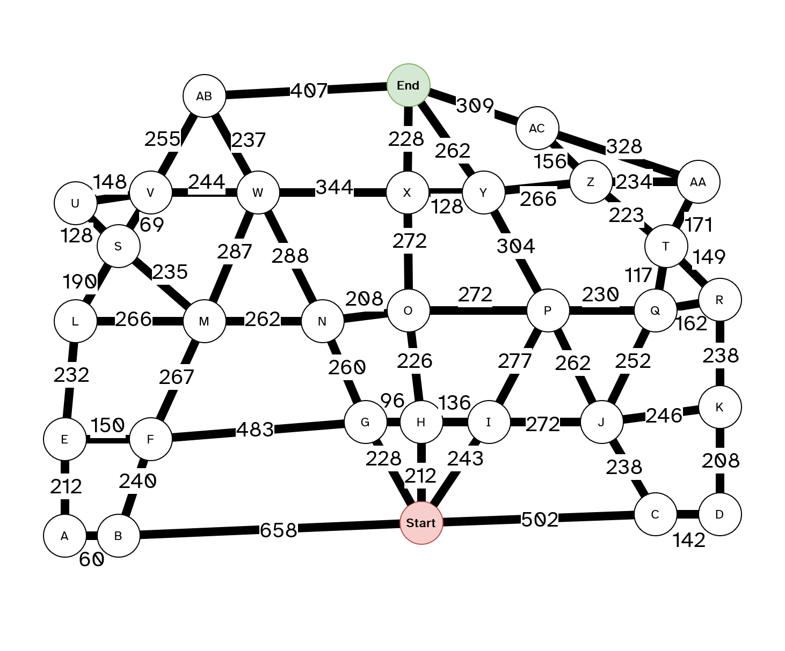

Designing an 'Ethical Engine' for a Self-Driving Car
M33193 Core Computing Concepts—CW Item 1
Thomas Robinson up2194485
This poster will demonstrate the process of designing an 'ethical engine' for a self driving car, utilising the concepts of graph theory, route finding algorithms, and applying ethical decision making to risk analysis.
Creating the Graph
- The map of the town must be converted into a graph
- Each intersection is translated into a node, and each road is translated into an edge
- The distance of each road is used as the weight of each edge
- The layout of the graph does not need to reflect the layout of the town, though we will use the same layout for simplicity
 

The Fastest Route
- A* is popular, efficient, and easy to understand.
- It may not always find the fastest route like Dijkstra's algorithm, but is more efficient.
- The heuristic function is the straight-line distance to the destination node.
- A constant speed is assumed, with no backtracking. The algorithm is ran once.
-

We calculate the values for each node connected to the Start node (B, C, G, H, I), by adding the distance value and the heuristic. Each of the connected nodes are marked as coming from the Start node.
-
Node H had the lowest
fvalue (distance + heuristic), so we move on to H and mark Start as visited. The process repeats; we check the nodes connected to H, but ignore Start as it has already been visited. -
As before, we move onto O since it has the lowest
fvalue, calculate thefvalues of its neighbours, and mark it as visited.
-
We continue the process, moving onto X
-
Now we are at the end node, we work backwards from the End node, using the
Previouscolumn. This is our shortest route.
Factoring in Risk
- To factor in the risk of the route, the busyness of the areas on the map were used. It can be assumed that the busier an area is, the more likely it is that an accident will take place.
- A risk value can be assigned to each area, and take the risk of the most dangerous area that the road borders. This is a utilitarianist approach, as it maximises the safety of the passengers and pedestrians using an objective method.
- An algorithm is unable to subscribe to deontological principles, as it is unable to make moral judgements. Defining deontological rules for the car to follow is infeasible, as it would be impossible to account for every possible scenario, and the ethics of every situation are inherently subjective. Virtue ethics would also require the car to have a 'moral compass,' which is not possible.
- The risk value of each road can be converted into a numerical value, to use as a multiplier in the graph. The weight of each edge (road) on the graph is multiplied by the risk of the road, to give a new weight that takes into account both distance and risk. This new weight is then used by the A* algorithm to calculate the route.
- The multipliers can be adjusted to prioritise risk over distance, or vice versa. For example, an emergency service vehicle would prioritise speed over safety, and therefore the risk multipliers would be lowered to prioritise distance. Other vehicles, such as a lorry carrying hazardous materials, or a coach full of passengers, would prioritise safety over speed, and therefore the risk multipliers would be increased to prioritise risk.
The Optimal Route, Town 1

With a method of distilling distance and risk into one value, this can use this to calculate the optimal route, using the same A* algorithm as previous.
Since blue is described as twice as busy (and therefore twice as risky) as gree, and red twice as busy as blue, the multipliers of 1, 2, and 4 were used. This means that if a road borders a blue area, its weight is doubled, and if it borders a red area, its weight is quadrupled. As can be seen above, the path taken by the algorithm completely avoids the red area, and only enters a blue area momentarily.
Testing on Town 2
Now that the algorithm has been tested on the initial town, we can ensure its generalisability by testing it on a new town.
The steps of creating the graph, calculating the fastest route, and calculating the optimal route are repeated for Town 2.
As previously, the route calculated takes into account the distance and risk of each road, and the risk multipliers can be adjusted to prioritise speed or safety.
A Third Town
This third town is based on the real suburb of Bournville, Birmingham. The risks for each area are based on the amenities within each area, to reflect a more realistic concentration of 'business.' Unlike the towns provided, this town has a more complex layout, and the areas of risk do not follow a simple pattern with red in the centre, blue in the middle, and green on the outskirts.
Conclusions & Possible Improvements
- The algorithm, in avoiding busy areas, often spends significant time going further away from the end goal. A stronger heuristic would make it more likely to head more directly to the destination.